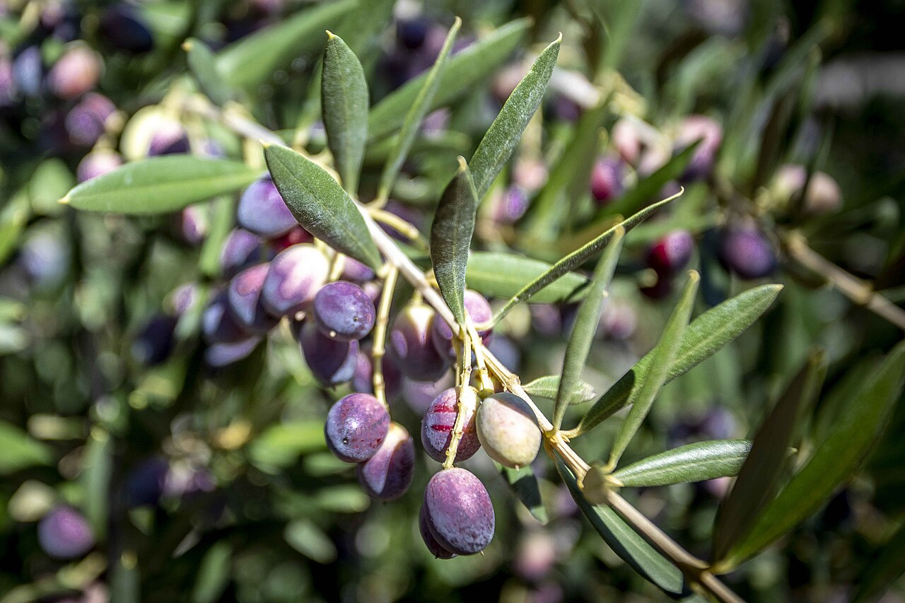
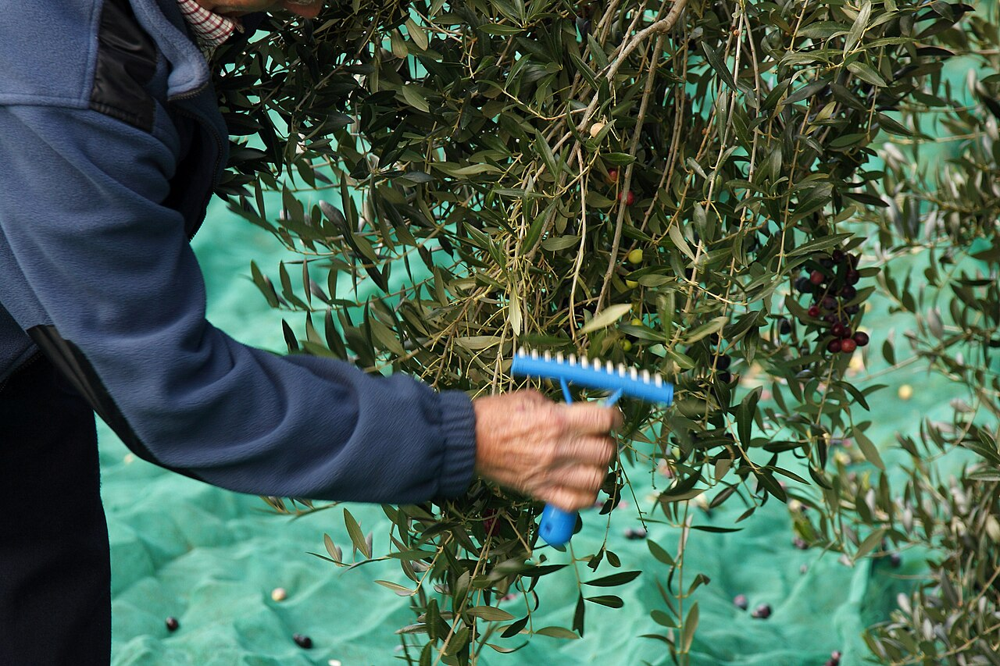

Una molestia con nombre propio
Pruebas el aceite recién salido del molino y, un par de segundos después, notas un raspado en el fondo de la garganta. A veces hasta toses. La reacción habitual es pensar que algo falla. No falla nada: estás notando oleocanthal, un polifenol que el aceite de oliva virgen extra tiene en abundancia cuando la aceituna se ha recogido pronto y se ha molido rápido.
Lo curioso es dónde lo notas. El oleocanthal no pica en la lengua, como una guindilla: pica solo en la garganta. Eso llamó la atención de los investigadores, porque es exactamente lo que hace el ibuprofeno líquido. Al estudiarlo vieron que ambos inhiben las mismas enzimas, las ciclooxigenasas, por caminos distintos. De ahí el nombre que le pusieron.
Cómo leer un aceite nuevo
Pica en la garganta. Polifenoles: aceituna temprana y molturación rápida. · Amarga un poco. La misma familia de compuestos; es la firma del verde. · Huele a hierba cortada. Cuanto más recién hecho, más intenso. · Está turbio. Si es sin filtrar, lleva partículas en suspensión. Normal y buscado. · Lo que sí es un defecto: que huela a rancio, a humedad o a vinagre.
Qué es, exactamente, la DOP Siurana
La DOP Siurana ampara el aceite de oliva virgen extra de una buena parte de esta provincia: Alt Camp, Baix Camp, Baix Penedès, Tarragonès, Conca de Barberà, Priorat y Ribera d'Ebre. Su consejo regulador tiene la sede en el passeig Sunyer de Reus, y detrás hay miles de productores, casi todos familiares, con explotaciones pequeñas.
Una sola variedad: la arbequina. Oliva pequeña, de hueso diminuto y rendimiento alto, que da un aceite más suave y afrutado que las variedades del sur. No es la más espectacular en boca, pero sí de las más constantes año tras año — y eso, en aceite, vale mucho.


El perfil, según el propio consejo regulador
La denominación no deja el sabor a la interpretación de cada uno: lo tiene escrito. Un Siurana debe presentar un frutado medio-alto, con notas verdes que recuerdan a hierba, tomate, alcachofa y almendruco, y notas maduras de plátano, almendra e hinojo. En boca, entrada suave y dulce, con un ligero toque amargo y picante.
Fíjate en el final de esa descripción: ligero toque amargo y picante. El amargor y el picor no son tolerados a regañadientes — están dentro de la definición oficial de lo que debe ser este aceite.
El oli del raigEl que se bebe joven
En noviembre, muchos molinos de la zona venden el llamado oli del raig: el primero que sale, sin filtrar, turbio, con partículas de aceituna todavía en suspensión. Es el momento en que más aroma tiene y el menos duradero: esas mismas partículas lo hacen envejecer antes. Por eso se compra poco y se gasta pronto.
La forma clásica de estrenarlo por aquí no tiene ningún misterio: pan tostado, un diente de ajo si se tercia y un chorro generoso. Sin nada más. Y si hay calçots o una salsa de romesco cerca, el aceite nuevo también se nota — es la base de medio recetario del Camp.
Dónde probarloReus, cada noviembre
Reus celebra la Fira de l'Oli DOP Siurana, la Festa de l'Oli Nou, en la plaça de la Llibertat. Es la primera feria de Cataluña donde el aceite nuevo de la temporada se presenta de forma colectiva, y el primer sitio donde se pueden catar y comprar una veintena de aceites nuevos distintos el mismo día. La edición de 2025, la vigésimo octava, fue el 14 y el 15 de noviembre.
Las fechas de este año conviene confirmarlas en la web del consistorio o de la denominación: se anuncian a finales de octubre y cambian de un año a otro.
Y nosotros tambiénEl ingrediente que nunca se cata
En las visitas del recorrido valoramos la materia prima como uno de los ocho criterios, y el aceite es de los pocos ingredientes que están en casi todos los platos y que casi nunca se comentan. Un buen Siurana en una ensalada se nota; un aceite cansado, también. Vale la pena preguntar por él: la respuesta dice bastante de la casa.
Fuentes: Consell Regulador de la DOP Siurana (ficha de la arbequina y parámetros del aceite), Ajuntament de Reus, y la literatura científica sobre el oleocanthal recogida en el National Center for Biotechnology Information. Imágenes: Juan Emilio Prades Bel (CC BY 4.0), Jaumeboldu y Gonzalo Cambra Steinfeld (CC BY-SA 4.0), vía Wikimedia Commons.
Newsletter
¿Quieres recibir la próxima crónica antes que nadie?
Crónicas de los restaurantes visitados, vinos recomendados y novedades del Camp de Tarragona. Cada quince días, sin ruido.
Sin spam · Date de baja cuando quieras.